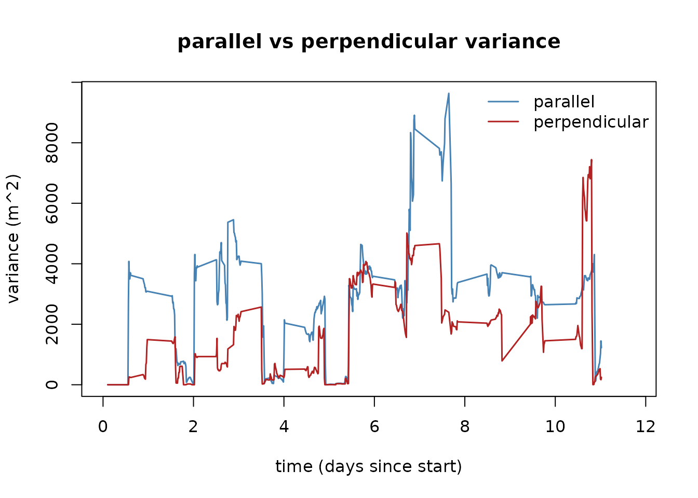
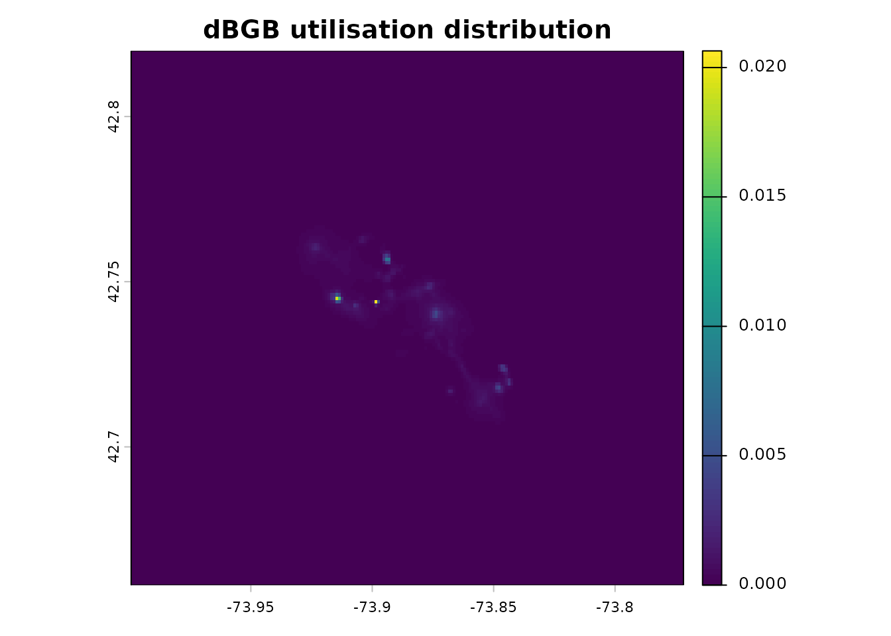
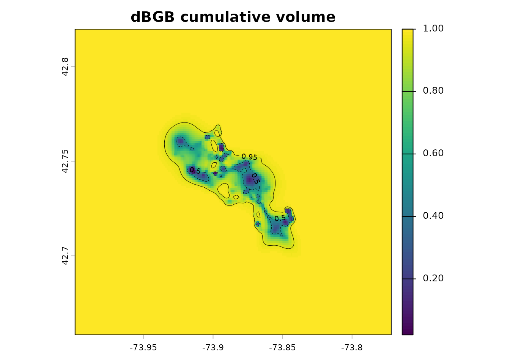
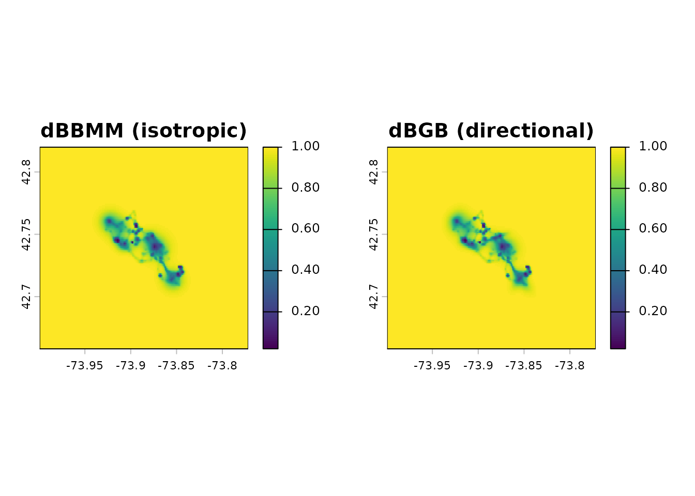

Directional UDs with the dynamic bivariate Gaussian bridge (dBGB)
Source:vignettes/UD_dbgb_ud.Rmd
UD_dbgb_ud.RmdWhen an animal travels in a committed direction — a migration leg, a daily commute between roost and foraging site — you intuitively expect its utilisation distribution to be elongated along that direction, not a round blob. The standard dynamic Brownian bridge (dBBMM) doesn’t capture this: it treats movement between two fixes as wandering equally in all directions, so it spreads the UD into a circle around each step. For a directed traveller, that over-spreads sideways and under-represents the actual route.
The dynamic bivariate Gaussian bridge (dBGB) fixes this. It splits the bridge between two fixes into two parts: one along the direction of travel and one perpendicular to it. Each part has its own variance. When the animal is moving fast and straight, the along-track variance is large (it could be anywhere on the line) but the across-track variance is small (it’s not off to one side). The resulting UD hugs the travel axis instead of spreading into a disc.
mt_dbgb_variance() and mt_dbgb_ud() are the
directional counterparts to mt_dbbmm_variance() and
mt_dbbmm_ud(). They share the same two-step workflow (fit
the variance, then rasterise the UD) and return UDs on the same kind of
terra grid, so you can swap them in without restructuring
downstream code. If you used move::brownian.bridge.dyn()
before, the dBGB is the directional generalisation: when the parallel
and perpendicular variances are equal, dBGB collapses back to dBBMM.
When to reach for dBGB rather than dBBMM
| Movement mode | Reach for |
|---|---|
| Foraging, resting, random area use |
mt_dbbmm_* (isotropy is a fine prior) |
| Commuting, migration legs, directed travel | mt_dbgb_* |
| Mixed (the usual case) | Either. dBGB generalises dBBMM: when parallel and perpendicular variances are equal, the two agree. It is safe to default to dBGB if you suspect directionality matters. |
The cost is modest — roughly twice the compute of dBBMM because two variances have to be estimated per window — and the benefit is a UD that respects the direction of travel.
Load a track
library(move2)
library(sf)
library(dplyr)
library(terra)
library(move2utils)
fishers <- mt_read(mt_example())
fishers <- fishers[!st_is_empty(fishers), ]
## Leroy again, first 500 fixes for a fast build. Like dBBMM, the dBGB
## functions accept any CRS and return the UD in it, so we pass this
## lon/lat track straight in (project first with mt_aeqd_crs() if you
## prefer a metric grid).
leroy <- filter_track_data(fishers, .track_id = "M1")
leroy <- slice(leroy,1:500)Fit a dBGB
The signature mirrors dBBMM. mt_dbgb_variance() returns
an S3 object holding the parallel and perpendicular standard deviations;
mt_motion_variance() extracts them as a
data.frame with columns para and
orth.
var_dbgb <- mt_dbgb_variance(
leroy,
location_error = 20,
window_size = 31,
margin = 11
)
#> Input is in longitude/latitude. Auto-projecting to a local AEQD CRS for dynamic directional Brownian-bridge variance estimation; distances and variances are in metres.
## per-location directional variances
v_df <- mt_motion_variance(var_dbgb)
summary(v_df)
#> para orth
#> Min. : 0.0 Min. : 0.00
#> 1st Qu.: 211.1 1st Qu.: 45.92
#> Median :2665.5 Median : 611.22
#> Mean :2272.7 Mean :1427.74
#> 3rd Qu.:3500.0 3rd Qu.:2292.49
#> Max. :9634.7 Max. :7443.30
#> NAs :21 NAs :21A quick comparison of the two dimensions over time tells you whether
the animal is directional. The ratio para / orth > 1
indicates elongation along the direction of travel.
time_days <- as.numeric(mt_time(leroy) - mt_time(leroy)[1], units = "days")
plot(time_days, v_df$para, type = "l", col = "steelblue", lwd = 1.5,
ylim = c(0, max(v_df, na.rm = TRUE)),
xlab = "time (days since start)", ylab = "variance (m^2)",
main = "parallel vs perpendicular variance")
lines(time_days, v_df$orth, col = "firebrick", lwd = 1.5)
legend("topright", c("parallel", "perpendicular"),
col = c("steelblue", "firebrick"), lwd = 1.5, bty = "n")
Rasterise the UD
mt_dbgb_ud() accepts the variance object (or a
move2 track directly, in which case it estimates variance
internally) and produces a SpatRaster whose cells sum to
1.
ud_dbgb <- mt_dbgb_ud(var_dbgb, location_error = 20,
raster = 100, ext = 0.85)
terra::plot(ud_dbgb, main = "dBGB utilisation distribution")
If you see The raster does not extent far enough ...,
increase ext (padding around the auto-generated raster) or
pass a pre-made SpatRaster that is large enough. The dBGB
kernel needs more margin than dBBMM when the parallel variance is high,
because the bridge extends further along the direction of travel.
Cumulative-volume UD and isopleths
ud_volume() converts the probability-density UD into
cumulative- volume space and works on any UD SpatRaster,
dBBMM or dBGB (see
vignette("UD_dbbmm_ud", package = "move2utils") for more
details).
vud_dbgb <- ud_volume(ud_dbgb)
terra::plot(vud_dbgb, main = "dBGB cumulative volume")
terra::contour(vud_dbgb, levels = c(0.5, 0.95), add = TRUE,
lty = c(2, 1), lwd = c(0.5, 0.5))
Side-by-side: dBBMM vs dBGB on the same track
A two-panel comparison reveals where the two models differ. Same
track, same grid, same location_error:
var_dbbmm <- mt_dbbmm_variance(
leroy, location_error = 20,
window_size = 31, margin = 11
)
#> Input is in longitude/latitude. Auto-projecting to a local AEQD CRS for dynamic Brownian-bridge variance estimation; distances and variances are in metres.
ud_dbbmm <- mt_dbbmm_ud(var_dbbmm, location_error = 20, raster = 100,
ext = 0.85, verbose = FALSE)
## put both UDs on the same extent so the two panels are comparable
common_ext <- terra::union(terra::ext(ud_dbbmm), terra::ext(ud_dbgb))
ud_dbbmm <- terra::extend(ud_dbbmm, common_ext)
ud_dbgb <- terra::extend(ud_dbgb, common_ext)
## plotting the cumulative-volume UD for better visualization
vud_dbbmm <- ud_volume(ud_dbbmm)
vud_dbgb <- ud_volume(ud_dbgb)
par(mfrow = c(1, 2))
terra::plot(vud_dbbmm, main = "dBBMM (isotropic)")
terra::plot(vud_dbgb, main = "dBGB (directional)")
On a fisher, which foraged extensively over this window, the two UDs
will look similar. On a commuting or migrating animal, the dBGB UD
narrows visibly along the travel legs. Try the Leo turkey vulture
example
(vignette("OUTLIER_example_leo_migration", package = "move2utils"))
for a clearer case.
Gap handling
dBGB exposes a segment-level interest flag
(seg_interest) rather than a location-level
interest flag. The semantics are the same — a segment
marked FALSE is skipped during UD integration — but you
index it one shorter than the track length (n-1 segments).
lag_min <- as.numeric(mt_time_lags(leroy, units = "min"))
var_dbgb$seg_interest[lag_min > 300] <- FALSE
ud_masked <- mt_dbgb_ud(var_dbgb, location_error = 20, raster = 100,
ext = 0.85, verbose = FALSE)Further reading
-
vignette("UD_dbbmm_ud", package = "move2utils")— the Dynamic Brownian bridge UDs (dBBMM). -
vignette("UD_bursted_uds", package = "move2utils")— producing dBBMM and dBGB UDs per behavioural or temporal segment per individual. -
vignette("UD_gap_aware_ud", package = "move2utils")— excluding long-gap segments from dBBMM/dBGB -
vignette("UD_ud_comparison", package = "move2utils")— comparing UDs, stacking on a common grid, computing an overlap metric, and computing Earth-mover’s distance (EMD). - Kranstauber (2019). Modelling animal movement as Brownian bridges with covariates. Movement Ecology 7:22.